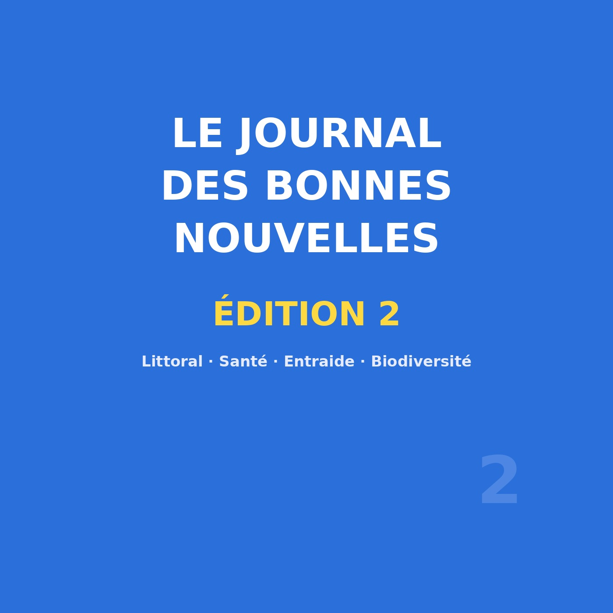
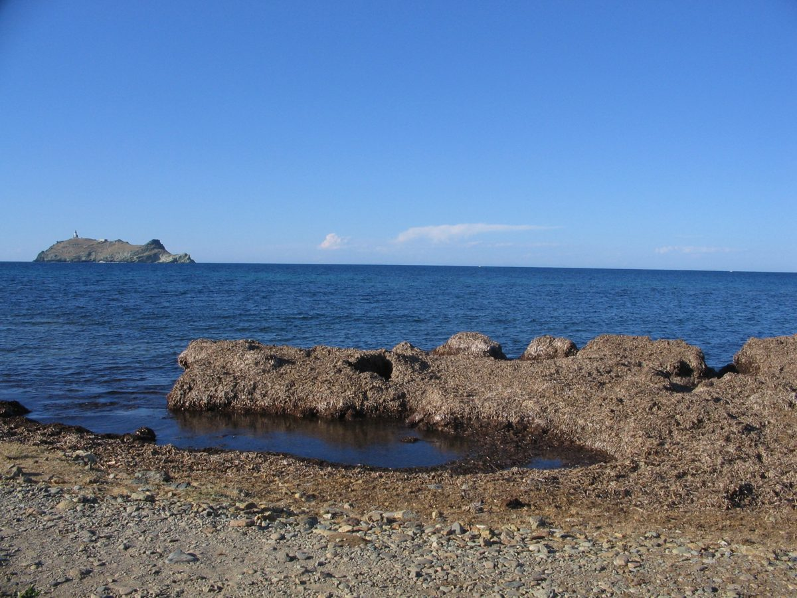

Édition n°2 — posidonie, vaccin, voisins solidaires, biodiversité en Lorraine
Œuvre de fiction radiophonique : les reporters sont fictifs, mais tous les faits évoqués sont réels, datés et sourcés.

🎧 Écoutez le journal : Le Journal des Bonnes Nouvelles — Édition 2, 11 min 32 — Écouter sur Spotify →
Deuxième édition du Journal des Bonnes Nouvelles, avec la même promesse : ne raconter que ce qui est vérifiable. Le journal ouvre sur quatre sujets géographiquement éloignés — une côte varoise, un bureau genevois, un quartier bordelais, une prairie lorraine — et referme sur la note du sourire. Aucun sujet n'a été retenu pour son effet spectaculaire : tous reposent sur des sources datées.
Premier arrêt au large de la presqu'île varoise. Ce que l'on appelle communément une « algue » est une plante à fleurs : la posidonie (Posidonia oceanica), endémique de la Méditerranée, dont les herbiers descendent jusqu'à 40 à 45 mètres selon l'UICN. Ces prairies sous-marines jouent un rôle de nurserie, protègent de l'érosion en retenant le sable et stockent du carbone. Trois pressions les ont fragilisées : le mouillage, l'ancrage sauvage, le chalutage illégal.
L'Office français de la biodiversité a publié le 9 juillet 2026 un article sur la « restauration des herbiers de posidonie à Porquerolles » : un projet financé par Mission Nature, combinant restauration active et passive. Le chantier est lancé. Sans triomphalisme : un herbier ne se répare pas en une saison — mais pas du tout sans intervention.
Deuxième sujet, la santé mondiale. L'OMS, via IRIS, recommande deux vaccins antipaludiques — RTS,S/AS01 et R21/Matrix-M — pour prévenir le paludisme à P. falciparum chez les enfants des zones d'endémie. Aidspan (2024) rappelle que l'OMS a recommandé un deuxième vaccin et que RTS,S et R21 sont sûrs, en cours de déploiement progressif en Afrique.
Le mot important est complément : ces vaccins ne remplacent ni les moustiquaires imprégnées ni les traitements, ils s'y ajoutent. Un déploiement progressif suppose une installation pas à pas, avec des retards possibles. Avance majeure, et chantier de terrain.
Troisième sujet, retour en France, sur un terrain plus domestique. Selon un article de RCF, « 10 % des Français sont isolés », et une application est née pour y répondre en « formant des réseaux de voisins solidaires pour créer du lien ». Le principe tient en peu de mots : mettre en relation des voisins d'un même quartier, former des binômes intergénérationnels, et viser la réduction de l'isolement selon une logique de réciprocité — chacun apporte, personne n'est réduit au rôle de receveur. Un dispositif à l'échelle de l'immeuble ou de la rue, dont l'effet dépend de ceux qui l'utilisent.
Quatrième sujet, sans doute le moins connu. Le dispositif Mission Nature, surnommé loto de la biodiversité, consacre une part de ses mises à la restauration d'espaces naturels en France. Le 22 juillet 2026, Le Journal des Entreprises annonçait que Mission Nature finance deux projets en Lorraine, dont un du Conservatoire d'espaces naturels de Lorraine pour la restauration de 46 hectares de pelouses calcaires, milieux riches en orchidées et insectes rares. Actu-Environnement signalait la 4e édition du loto, avec 28 nouveaux projets financés.
Des pelouses calcaires, on les croit souvent vides et oubliées. Ce sont au contraire des milieux d'une richesse remarquable : la restauration conduite par le Conservatoire lorrain est une opération sans grand titre, mais réelle et suivie.
Dernière séquence, hors des chiffres : la note du sourire. Elle n'affirme rien de vérifiable et ne prétend rien prouver ; c'est un regard de reporter. Un primeur, un jardin partagé, une petite annonce manuscrite sur une porte d'immeuble : des gestes minuscules que personne ne comptabilise et qui font tenir une journée. Nous assumons la subjectivité de ce moment, avec une seule règle : n'y glisser aucune affirmation factuelle.
De la posidonie au vaccin, du voisin au quart de prairie : cette édition ne raconte pas une victoire, mais des chantiers — tenus par la recherche, les collectivités, les associations et les habitants. Rendez-vous la semaine prochaine.

Sources : OFB — « Restauration des herbiers de Posidonie à Porquerolles » (9 juillet 2026) · OMS / IRIS — RTS,S/AS01 et R21/Matrix-M · RCF — « 10 % des Français sont isolés » · Actu-Environnement — 4e édition du loto de la biodiversité.